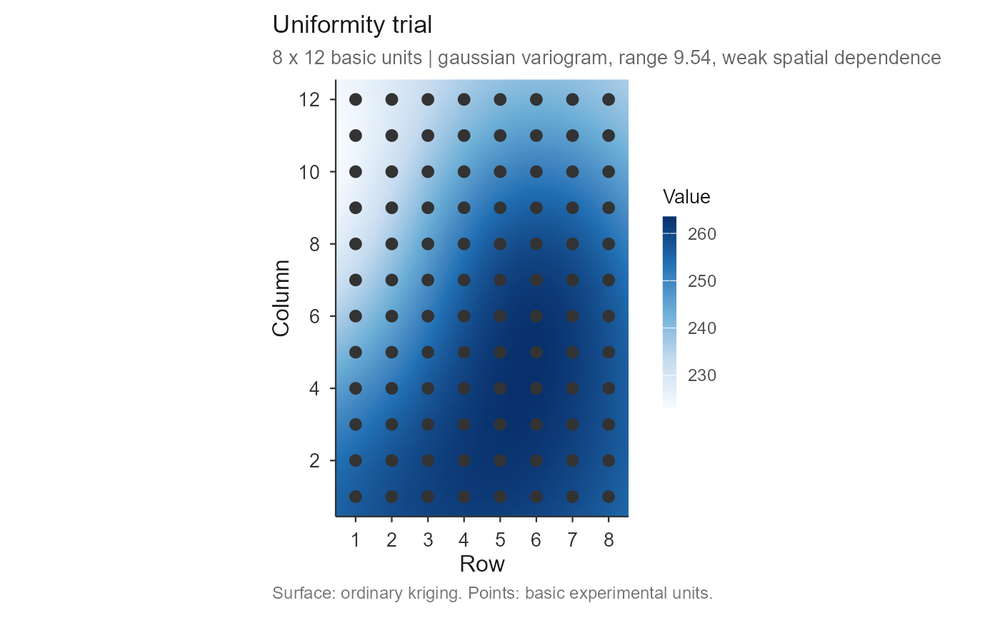
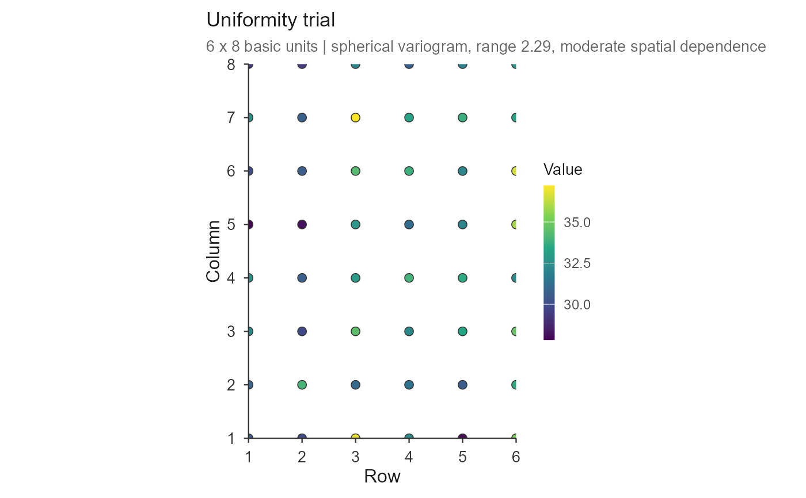

Draws the trial as a map: an ordinary-kriging surface built from the
variogram fitted by check_trial(), with the basic experimental units drawn
on top and filled on the same colour scale. The surface shows where the
field is systematically better or worse; the points show the data the
surface came from, so an interpolation artefact cannot be mistaken for a
measurement.
Usage
# S3 method for class 'trial_check'
plot(
x,
resolution = 120,
points = TRUE,
point_values = TRUE,
point_size = 2.4,
point_stroke = 0.4,
point_colour = "grey20",
surface = TRUE,
palette = c("viridis", "blues", "greys", "terrain"),
title = NULL,
subtitle = NULL,
caption = NULL,
legend_title = NULL,
xlab = "Row",
ylab = "Column",
base_size = 12,
family = "sans",
...
)Arguments
- x
an object of class
"trial_check".- resolution
number of interpolation cells along the longer side of the field (default 120). The surface costs one linear solve, so raising this is cheap.
- points
logical; draw the basic units (default
TRUE).- point_values
logical; fill the points with their own value (default
TRUE).FALSEdraws them as plain markers, showing only the sampling positions.- point_size, point_stroke, point_colour
size of the unit markers, the width of their outline, and its colour. A dark rim keeps the markers visible over the pale end of any palette.
- surface
logical; draw the kriged surface (default
TRUE). WithFALSEonly the units are drawn, which is the honest picture when the variogram shows weak spatial dependence.- palette
one of
"viridis"(default),"blues","greys"or"terrain". The default is perceptually uniform and readable in greyscale and to colour-blind readers, which several journals now require;"blues"gives the classic look.- title, subtitle, caption, legend_title
plot labels.
NULLleaves a sensible default;NAremoves the element.- xlab, ylab
axis titles.
- base_size, family
base font size and family.
- ...
ignored.
Details
With several trials the maps are faceted and share one colour scale, which is what makes them comparable.
Examples
grid1 <- as.matrix(uniformity_trial[uniformity_trial$trial == "T1",
grep("^col", names(uniformity_trial))])
chk <- check_trial(grid1)
#> Checking 1 trial(s).
# \donttest{
plot(chk)
 ## the classic look, and points as plain position markers
plot(chk, palette = "blues", point_values = FALSE)
## the classic look, and points as plain position markers
plot(chk, palette = "blues", point_values = FALSE)

## data only, no interpolation
plot(chk, surface = FALSE)

# }